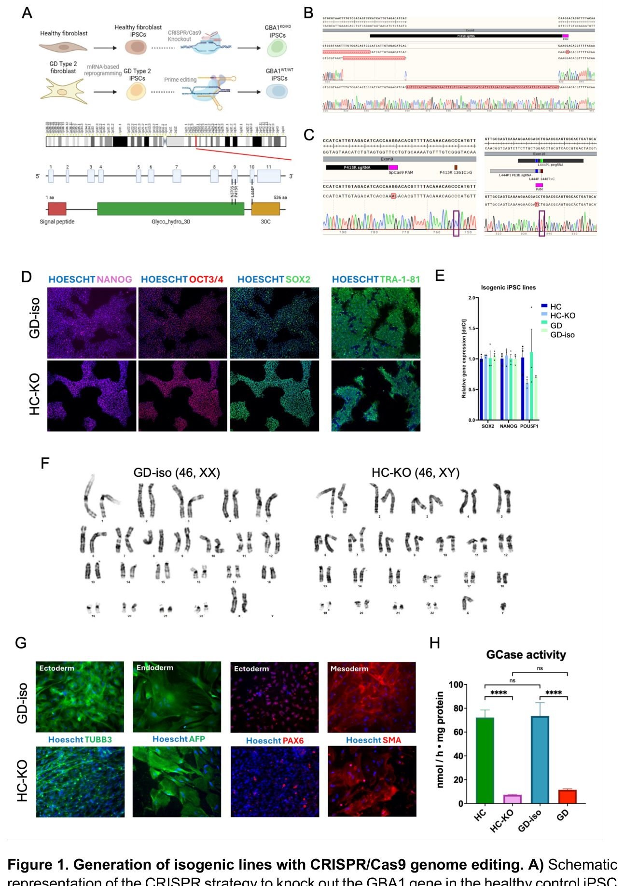
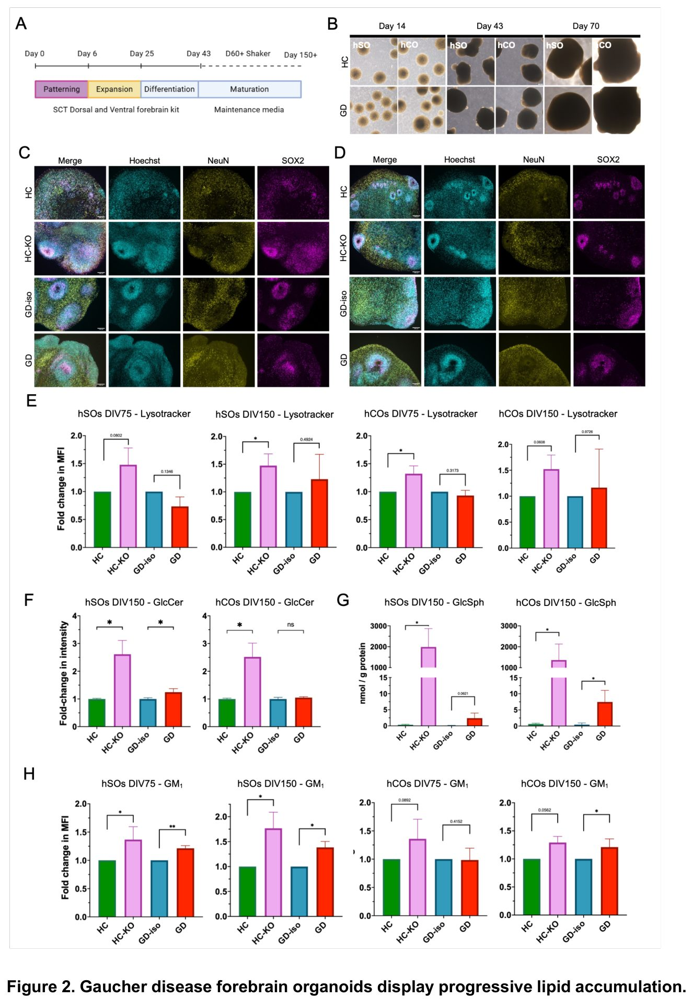
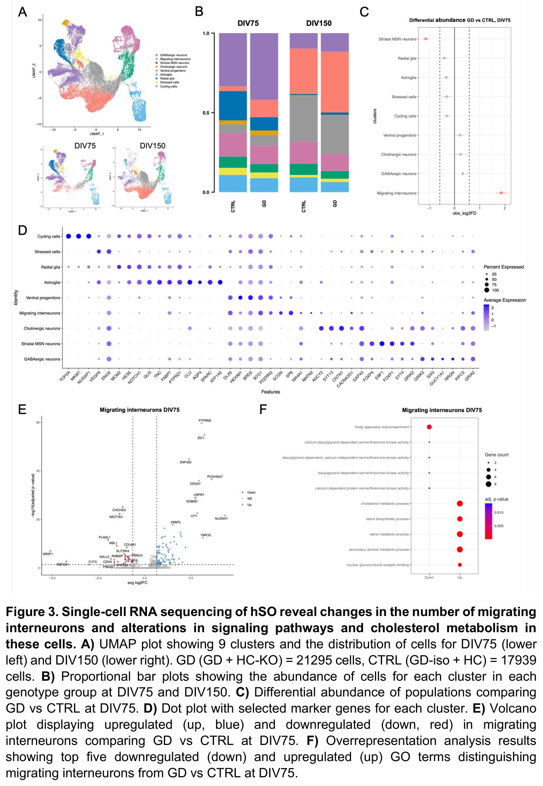
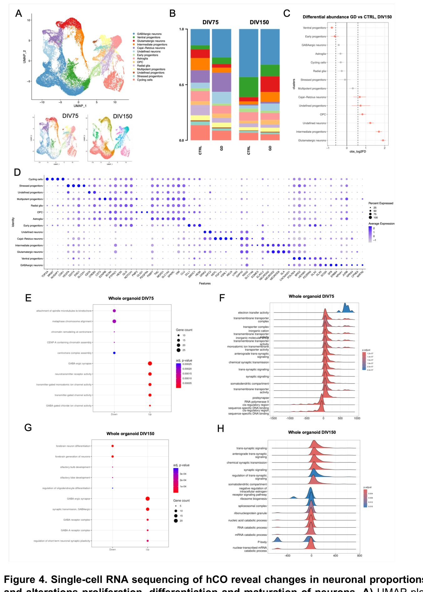
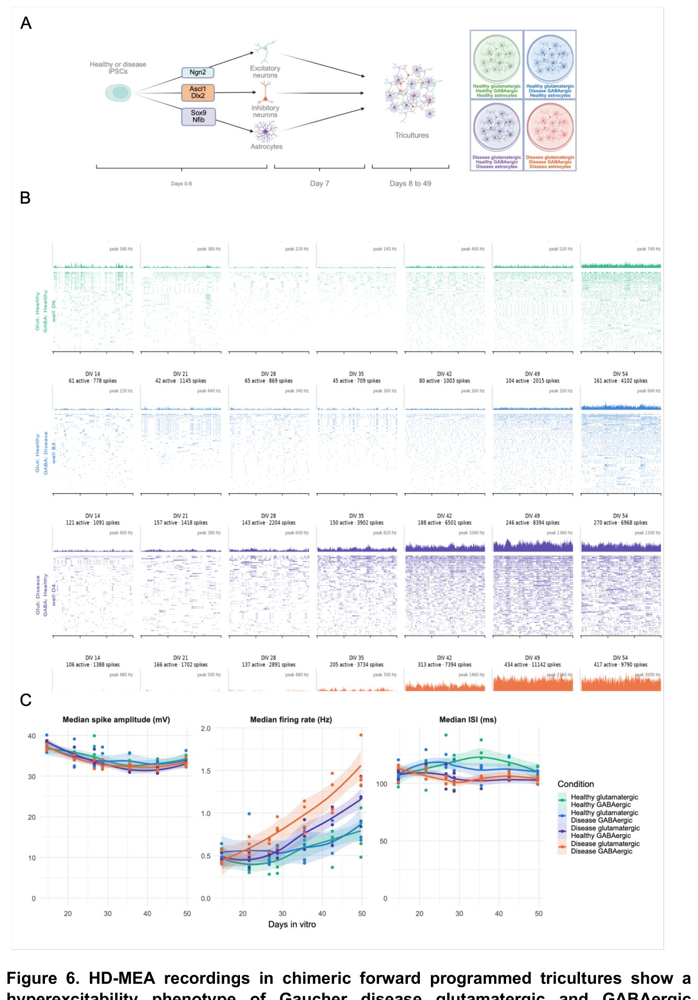
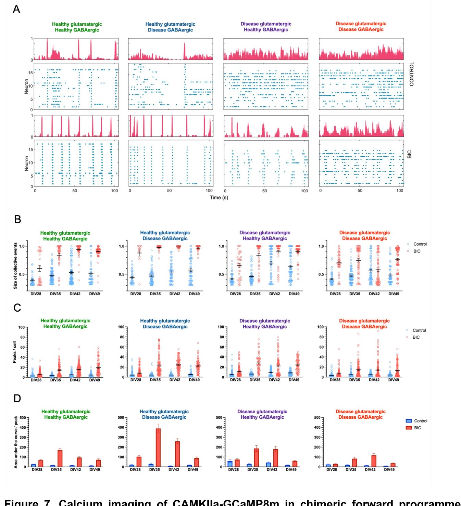

Гоше ауруы кезінде ми неге құрысуға бейім болады


Гоше ауруы көбінесе ауыр неврологиялық бұзылыстармен, соның ішінде эпилепсиялық ұстамалармен сипатталады. Бұған дейін бұл процестерді жануарлар модельдерінде зерттеу қиын болған. Зерттеушілер адам миының дамуын қайталайтын органоидтарды жасап шығарды. Бұл әдіс липидтердің жиналуы мидағы қозу мен тежелу тепе-теңдігін қалай бұзатынын көрсетіп берді.
Басты ойлар
- GBA1 мутациясы липидтер алмасуын бұзады
- Ми органоидтарында глутаматергиялық қозудың күшеюі анықталды
- Тежеуші нейрондар функциясының төмендеуі байқалды
Толығырақ
Гоше ауруы GBA1 геніндегі мутациялар салдарынан болатын лизосомалық ауру. Бұл мутация глюкоцереброзидаза ферментінің жетіспеушілігіне әкеледі, нәтижесінде жасушаларда улы липидтер жиналады. Зерттеушілер индуцирленген плюрипотентті дің жасушаларын (iPSC) пайдаланып, сау және ауру жасушалар желілерін жасады. Осы жасушалардан ми қыртысы мен субпаллиалды бөліктерді имитациялайтын органоидтар өсірілді.
Жеке жасушалардың транскриптомдық талдауы мутацияның липидтер алмасуы мен митохондрия функцияларын ерте кезеңде бұзатынын көрсетті. Кортикальды органоидтарда нейрондардың көбеюі азайып, олардың глутаматергиялық (қоздырушы) бағытқа ауысуы байқалды. Функционалдық тесттер органоидтардағы нейрондық желілерде патологиялық гиперқозғыштықты растады. ГАМК-ергиялық (тежеуші) нейрондар бұл артық қозуды теңестіре алмады, бұл науқастардағы емдеуге қиын құрысулардың себебін түсіндіреді.
Шектеулер
Зерттеу in vitro жағдайында жүргізілді, сондықтан ағзаның күрделі жүйелі өзара әрекеттесуін толық қамтымайды.
Мақаланың толық талдауы
Түйіндеме
Гоше ауруы — бұл GBA1 геніндегі аутосомды-рецессивті мутациялар салдарынан туындайтын сирек кездесетін лизосомалық ауру. Бұл ген лизосомалық глюкоцереброзидаза ферментін кодтайды. Аурудың үш түрі бар, олар жүйке жүйесінің зақымдану дәрежесіне қарай жіктеледі. 2-типтегі ауру ерте басталатын нейропатологиямен, дамудың тежелуімен, эпилепсиялық ұстамалармен және ерте өліммен сипатталады. Нейропатиялық Гоше ауруының механизмдерін зерттеу негізінен жануарлар модельдеріне сүйенеді және көбінесе нейрондардың кешкі фенотиптеріне бағытталған.
Маңызды
2-типтегі Гоше ауруы — мидың дамуының ерте кезеңдеріндегі механизмдері толық зерттелмеген ауыр нейродегенеративті жағдай.
Біз сау донорлар мен Гоше ауруы бар науқастардан алынған индуцирленген плюрипотентті діңгекті жасушалар (иПСК) желілерін жасадық және олардан изогенді бақылау желілерін алдық. Осы желілерді қолдана отырып, кортикальды және субпаллиальды ми органоидтары өсірілді. Бұл модельдерде біз липид алмасуының ерте бұзылуларын анықтадық: глюкозилцерамидтің жинақталуы, глюкозилсфингозин деңгейінің айтарлықтай жоғарылауы және кейінірек ганглиозидтер концентрациясының артуы байқалды, бұл клиникалық нәтижелерді қайталайды.
Түсіндірме
иПСК (индуцирленген плюрипотентті діңгекті жасушалар) — кез келген жасуша түріне, соның ішінде нейрондарға айнала алатын, ересек жасушалардан қайта бағдарламалау арқылы алынған жасушалар.
Бір жасушалы транскрипциялық профильдеу (scRNA-seq) арқылы жаңа фенотиптер ашылды. Субпаллиальды органоидтарда холестерин алмасуын күшейтетін миграциялық интернейрондардың ерте көбеюі байқалды. Кортикальды органоидтарда митохондриялық гендердің ерте белсендірілуі және пролиферацияның төмендеуі, содан кейін ГАМК-ергиялық нейрондардан глутаматергиялық нейрондарға ауысу және синаптикалық құрылымға қатысты гендер экспрессиясының күрт артуы анықталды.
Функционалдық талдаулар кортикальды органоидтардың жоғары қозғыштығын және ГАМК-А рецепторларының блокадасына жауаптың төмендегенін көрсетті. Қосымша 2D нейрондық желі модельдері органоидтардан алынған деректерді растады: Гоше ауруы кезінде глутаматергиялық нейрондар гиперқозғыштықты көрсетеді, ал ГАМК-ергиялық нейрондар бұл артық қозуды теңестіре алмайды. Қоздыру/тежелу тепе-теңдігінің бұл бұзылуы науқастарда емге төзімді ұстамалардың дамуын түсіндіреді.
Абайлаңыз
Зерттеу органоидтар мен 2D-дақылдарда жүргізілді, бұл адам миының жеңілдетілген моделі болып табылады, сондықтан нәтижелер клиникалық жағдайда қосымша тексеруді қажет етеді.
Кіріспе
Гоше ауруы және қолданыстағы модельдердің шектеулері
Лизосомалық қор жинақталу аурулары (LSD) лизосомалық ферменттердің тапшылығынан туындайтын сирек кездесетін тұқым қуалайтын метаболикалық аурулар тобы болып табылады. Бұл жасушалық гомеостаз үшін маңызды лизосомалық жүйенің бұзылуына және ыдырамаған молекулалардың жинақталуына әкеледі. Гоше ауруы — GBA1 геніндегі мутациялар салдарынан болатын LSD-дің ең көп таралған түрі, ол β-глюкоцереброзидаза (GCase) ферментін кодтайды. GCase тапшылығы лизосомаларда глюкозилцерамидтің (GlcCer) жинақталуына әкеліп, гепатоспленомегалия, панцитопения және сүйек зақымдануын тудырады. Сонымен қатар, GBA1 мутациясын тасымалдау Паркинсон ауруының даму қаупімен байланысты.
Гоше ауруы үш түрге бөлінеді: I тип (нейронопатиялық емес) анемиямен және ағзалардың ұлғаюымен сипатталады; II тип (жедел нейронопатиялық) сәбилерде тез дамитын нейродегенерациямен және ерте өліммен көрінеді; III тип (созылмалы нейронопатиялық) баяу дамиды. Қазіргі емдеу әдістері (фермент алмастырушы терапия) жүйелі симптомдарды жақсартқанымен, неврологиялық көріністерге әсері аз, өйткені ферменттер қан-ми тосқауылынан өте алмайды. Бұл миды аурудың дамуына осал қалдырады және паркинсонизммен байланысын түсіндіреді.
Маңызды
GBA1 мутациясынан туындаған Гоше ауруы GlcCer мен нейроуытты глюкозилсфингозиннің (GlcSph) жинақталуына әкеледі, алайда қолданыстағы емдеу әдістері қан-ми тосқауылына байланысты неврологиялық бұзылыстарды тиімді түзете алмайды.
GlcCer Гольджи аппаратында синтезделеді және мидың дамуы үшін қажетті ганглиозидтер сияқты күрделі гликосфинголипидтердің бастапқы өнімі болып табылады. Лизосомалық ыдырау бұзылғанда, GlcCer жинақталып, GlcSph-ке айналады — бұл аурудың нейроуытты биомаркері. Дәстүрлі тышқан модельдері түрлік айырмашылықтар мен ми құрылымының қарапайымдылығына байланысты адам ауруының уақытша динамикасын толық қайталамайды.
Органоидтар көмегімен Гоше ауруын модельдеу
Адам миының тіндерінің тапшылығын жою үшін ғалымдар индуцирленген плюрипотентті дің жасушаларын (iPSC) пайдаланады. Олар әртүрлі нейрон түрлеріне дифференциациялану және ми органоидтарын қалыптастыру қабілетіне ие. Бұған дейін нейрондар мен астроциттердің модельдері, сондай-ақ Паркинсон ауруын зерттеу үшін ортаңғы ми органоидтары жасалған болатын.
Түсіндірме
iPSC (индуцирленген плюрипотентті дің жасушалары) — бұл ересек жасушаларды (мысалы, тері фибробласттары) эмбрионалдық дің жасушалары күйіне қайтару арқылы алынған жасушалар, олар кез келген тін түріне айнала алады.
Бұл зерттеуде біз Гоше ауруы бар науқастың фибробласттарынан iPSC алдық. Геномды редакциялау әдістерімен науқас желісіндегі мутациялар түзетілді және бақылау желісінде GBA1 гені нокаутқа ұшыратылды, осылайша изогенді жұптар жасалды. Бұл төрт iPSC желісі кортикальды және субпаллиальды алдыңғы ми органоидтарына дифференциацияланды. Біз GlcSph жинақталуын және ганглиозидтер (GM1) деңгейінің өсуін анықтадық. Бір жасушалы транскриптомика талдауы нейрондық спецификация, миграция және жетілу процестеріндегі өзгерістерді көрсетті. Функционалдық тесттер глутаматергиялық және ГАМКергиялық нейрондардағы кемшіліктерді растады, бұл ауру механизмдері туралы жаңа мәлімет береді.
Абайлаңыз
Зерттеу in vitro модельдерге (органоидтарға) негізделген, олар мидың дамуын дәл қайталағанымен, бүкіл ағзаның жүйелі өзара әрекеттесуін толық көрсете алмайды.
Нәтижелер
Сау бақылау және Гоше ауруының iPSK желілерін тиісті изогенді бақылаумен құру
Нейронопатиялық Гоше ауруын модельдеу үшін біз науқастың тері фибробласттарын мРНҚ-репрограммалау арқылы iPSK желілерін алдық. Клондар ISSCR стандарттарына сәйкес сипатталды: олар типтік морфологияға (Сурет S1A) және NANOG, OCT3/4, SOX2 және TRA-1-81 маркерлерінің ақуыз (Сурет S1A) және мРНҚ (Сурет S1B) деңгейіндегі экспрессиясына ие болды. Гоше ауруы (GD) желісі хромосомалық ауытқуларсыз (Сурет S1C) және үш ұрық жапырақшасына дифференциациялану қабілетіне ие болды (Сурет S1D). Сэнгер секвенирлеуі GBA1 геніндегі P415R және L483P мутацияларын растады (Сурет S1E). Бастапқы «сау» желіде N370S мутациясы анықталғандықтан, ол сау тасымалдаушы (HC) желісі деп қайта аталды.
Түсіндірме
iPSK (индукцияланған плюрипотентті діңгекті жасушалар) — бұл ересек жасушаларды эмбрионалдық діңгекті жасушалар күйіне қайтару арқылы алынған, кез келген ұлпаға айнала алатын жасушалар.
HC желісінде нокаут (HC-KO) жасау үшін CRISPR/Cas9 қолданылды. GBA1LP псевдогенімен 96% гомологияға байланысты, біз GBA1-дің 9-экзонындағы 55 б.ж. ұзындықтағы бірегей бөлікті нысанаға алдық (Сурет 1A). Екі аллелі де зақымдалған клон алынды: 74 б.ж. кірістіру (K447fsX21 стоп-кодоны) және 30 б.ж. делециясы (F436_T446delinsS) (Сурет 1B). Дәл осы стратегия GD желісіндегі P415R мутациясын түзетуге мүмкіндік берді (Сурет 1C). 10-экзондағы L444P мутациясын түзету үшін псевдогенмен айырмашылығы болмағандықтан, ДНҚ-ның екі тізбекті үзілуінен аулақ болу үшін прайм-редакциялау (PE3b) қолданылды (Сурет 1C). Алынған GD-iso желісі плюрипотенттілікті, қалыпты кариотипті және дифференциациялану қабілетін сақтап қалды (Сурет 1D–G).
Маңызды
Изогенді желілер (HC-KO және GD-iso) GCase ферментінің белсенділігін толық қалпына келтірді немесе имитациялады: GD-iso үшін 73,46 нмоль/сағ·мг ақуыз (бастапқы GD 11,57 болды) және HC-KO үшін 7,39 нмоль/сағ·мг (бақылау HC 72,23 болды).
Функционалдық тексеру HC желісіндегі GCase белсенділігі 72,23 нмоль/сағ·мг ақуызды құрағанын, ал GD желісінде небәрі 11,57 болғанын көрсетті. HC-KO желісінде белсенділік 7,39-ға дейін төмендеді, ал түзетілген GD-iso желісінде 73,46 нмоль/сағ·мг-ға дейін қалпына келді (Сурет 1H). Осылайша, Гоше ауруының механизмдерін зерттеу үшін екі жұп изогенді желі (Кесте S1) құрылды.
Абайлаңыз
CRISPR/Cas9 және прайм-редакциялау әдістері жанама мутациялар қаупін азайтқанымен, off-target эффектілерді мұқият бақылау қажет.
Гоше ауруы бар ми органоидтарында сфинголипидтердің прогрессивті жинақталуы
Гоше ауруының нейронопатиялық түрін модельдеу үшін біз iPSC желілерін (HC, HC-KO, GD және GD-iso) қолданып, оларды алдыңғы мидың субпаллиалды (hSO) және кортикальды (hCO) органоидтарына дифференциацияладық (2A-сурет). Органоидтар 150 күнге дейін (DIV) өсірілді, барлық желілер ұқсас өсу динамикасын көрсетті (2B-сурет). DIV75 кезінде барлық желілерде SOX2+ нейрондық розеткалар мен NeuN+ нейрондар қалыптасты (2C, D-суреттер).
Түсіндірме
iPSC (индукцияланған плюрипотентті діңгекті жасушалар) — бұл ересек ағза жасушалары, олар зертханалық жағдайда эмбрионалды діңгекті жасушалар күйіне қайтарылған және кез келген ұлпаға, соның ішінде нейрондарға айнала алады.
Lysotracker бояуының көмегімен FACS талдауы HC-KO желісінде лизосомалардың көлемі мен саны бақылау тобына (HC) қарағанда айтарлықтай артқанын көрсетті. Сигналдың өсуі hSO үшін 1,48 есе және hCO үшін 1,32 есе (DIV75), ал DIV150 кезінде сәйкесінше 1,48 және 1,52 есені құрады (2E-сурет). GD және GD-iso желілерінде айқын айырмашылықтар байқалмады, бұл HC-KO желісіндегі ферментативті белсенділіктің төмендігіне байланысты фенотиптің ауырлауымен түсіндіріледі.
Маңызды
HC-KO желісі GD желісіне қарағанда әлдеқайда күшті лизосомалық дисфункцияны көрсетеді, бұл 150-күнге дейін Lysotracker сигналының артуымен расталады.
Глюкозилцерамид (GlcCer) ыдырауының бұзылуына байланысты біз DIV150 кезінде дот-блот талдауын өткіздік (2F-сурет, SN-сурет). HC-KO-да GlcCer деңгейі бақылау тобына қарағанда 2,6 (hSO) және 2,5 (hCO) есе өсті, ал GD желісінде өсім аз болды (1,25 және 1,05 есе). HPLC-MS көмегімен DIV150 кезінде жүргізілген GlcSph талдауы HC-KO (1987,75 және 1364,55 нмоль/г ақуыз) және GD (2,4 және 7,46 нмоль/г ақуыз) желілерінде жоғары деңгейді көрсетті (2G-сурет). GD желісінде GlcSph жинақталуы DIV75 кезінде-ақ анықталды (SN-сурет).
Абайлаңыз
Зерттеу органоидтарда жүргізілді; бұл жасанды модельдер адам миындағы барлық патологиялық процестерді толық көрсете алмауы мүмкін.
Біз ганглиозидтер метаболизмін де зерттедік. Жұқа қабатты хроматография DIV150 кезінде GM1 жинақталуын көрсетті (SN-сурет). Vybrant Alexa Fluor 555 көмегімен FACS талдауы мембранада GM1 жинақталуын растады: DIV75 кезінде флуоресценцияның өсуі HC-KO-да 1,37 және GD-да 1,21 есені, ал DIV150 кезінде hSO-да 1,77 (HC-KO) және 1,39 (GD) есені, hCO-да 1,29 (HC-KO) және 1,21 (GD) есені құрады (2H-сурет). Бұл нәтижелер GlcCer катаболизмінің бұзылуы нейрондық мембраналарда күрделі сфинголипидтердің жинақталуына әкелетінін көрсетеді.
Гоше ауруы бар hSO-да миграцияланатын интернейрондар санының артуы
Гликосфинголипидтер мидың қалыпты дамуы үшін маңызды. Гоше ауруы кезінде hSO (мидың алдыңғы бөлігінің органоидтары) және hCO (қыртыс органоидтары) жасушалық құрамына әсерін зерттеу үшін бір жасушалы РНҚ секвенирлеуі (scRNA-seq) талдауы жүргізілді. Зерттеуде 4 iPSC желісінен және 3 тәуелсіз дифференциация сериясынан алынған DIV75 және DIV150 күндік органоидтар пайдаланылды. Үлгілерді бір уақытта өңдеу үшін 10x Fixed RNA Profiling жүйесі қолданылды. Барлығы 21 295 Гоше және 17 939 бақылау жасушалары (hSO үшін), сондай-ақ 20 322 және 23 017 жасушалар (hCO үшін) талданды.
Түсіндірме
scRNA-seq — күрделі тіндердегі әрбір жасушаның генетикалық белсенділігін жеке-жеке зерттеуге мүмкіндік беретін әдіс.
hSO-да 9 жасушалық популяция, соның ішінде бөлінетін жасушалар, радиалды глия, астроглия және әртүрлі нейрондар анықталды (3A-B-сурет, 3D-сурет). Бақылау және Гоше топтарында DIV75-тен DIV150-ге дейін вентральды прогениторлар мен миграцияланатын интернейрондар саны артты (SN3A-сурет). DIV75-те Гоше органоидтарында стриарлы MSN-нейрондардың азаюы және миграцияланатын интернейрондардың айтарлықтай өсуі байқалды (3C-сурет, SN3D-сурет). DIV150-де айырмашылықтар азайды: тек холинергиялық нейрондар сәл азайып, MSN-нейрондар саны өсті (SN3B, G-сурет).
Маңызды
DIV75 сатысында Гоше ауруы кезінде миграцияланатын интернейрондар популяциясы айтарлықтай өскен.
Дифференциалды экспрессияланатын гендер (DEG) талдауы DIV75-те 114 жоғары және 70 төмен, ал DIV150-де 106 жоғары және 22 төмен экспрессияланған гендерді көрсетті (SN3C, D, F, G-сурет). NR2F1 гені екі мерзімде де ең көп төмендеген ген болды, ол нейрондар балансын басқарады. GO талдауы DIV75-те плазмалық мембрана процестерінің төмендегенін, лизосомалық және синаптикалық жолдардың белсендірілгенін көрсетті (SN3E-сурет). DIV150-де синаптикалық функциялар белсендіріліп, миграция және жасушадан тыс матрицамен байланысты жолдар бәсеңдеді (SN3H-сурет).
Абайлаңыз
Нәтижелер зертханалық жағдайдағы органоидтарда алынған, бұл тірі ағзадағы процестердің толық көшірмесі емес.
DIV75-тегі миграцияланатын интернейрондар талдауы 89 жоғары және 29 төмен экспрессияланған гендерді анықтады (3E-сурет, SN3D-сурет). Холестерин метаболизмі мен синаптикалық адгезия белсендірілген, ал Гольджи аппаратының функциясы, аутофагия және PKC-сигналдау бәсеңдеген (3F-сурет). Қорытындылай келе, Гоше ауруында мидың дамуы кезінде интернейрондар миграциясы мен холестерин алмасуы бұзылады.
Гоше ауруы кезіндегі hCO-да митохондриялық гендердің ерте белсендірілуі және нейрондық дамудың ауысуы
Адам миының органоидтарын (hCO) талдау прогениторлар, радиалды глия, астроглия және әртүрлі нейрон түрлерін қоса алғанда 14 жасушалық популяцияны анықтады (4A, 4D-сурет). 75-күннен 150-күнге дейінгі (DIV) кезеңде бақылау және Гоше органоидтарында Кахаль-Ретциус нейрондарының азаюы және GABA-ергиялық нейрондардың көбеюі байқалды (4B-сурет және SN4A-сурет). Алайда, Гоше ауруында (GD) 75-күні GABA-ергиялық нейрондардың артық мөлшері анықталса, 150-күні тежегіш нейрондардың есебінен қоздырушы (глутаматергиялық) нейрондар мен аралық прогениторлардың үлесі артқаны байқалды (4C-сурет, SN4B-сурет).
Маңызды
Гоше ауруы кезінде нейрондардың жедел жетілуі байқалады: 75-күні GABA-ергиялық жасушалар басым болса, 150-күні глутаматергиялық фенотипке ауысу жүреді.
Дифференциалды экспрессияланатын гендерді (DEG) талдау 75-күні 659 жоғары және 1008 төмен экспрессияланған генді, ал 150-күні 498 жоғары және 72 төмен экспрессияланған генді көрсетті (SN4C-F-сурет). 75-күні органоидтарда жасушалық цикл жолдарының төмендеуі және синаптикалық гендердің белсендірілуі байқалды, бұл жедел дифференциацияны білдіреді (4E-сурет). GSEA талдауы электрон тасымалдау белсенділігінің күшеюін көрсетті (4F-сурет), бұл 10 митохондриялық генмен байланысты (SN4C, SN5A-сурет). Бұл нейрондардың жетілуі кезінде гликолизден тотығу фосфорлануына ауысуды көрсетуі мүмкін.
Түсіндірме
GSEA (Gene Set Enrichment Analysis) — бұл жекелеген гендерді емес, функционалды байланысты гендер топтарының өзгеруін анықтауға арналған статистикалық әдіс.
Абайлаңыз
Зерттеу органоидтарда жүргізілген; митохондриялық және жасушалық өзгерістер адам миындағы патофизиологияны толықтай көрсетпеуі мүмкін.
TMRM қарқындылығын өлшеу GD кезінде нейрондардың екі түрінде де митохондриялық потенциалдың артқанын растады (SN5B, C-сурет). 150-күні GO-талдауы GABA-ергиялық нейрондардың даму жолдарының белсендірілуін көрсетті (4G-сурет), бұл олардың тапшылығы кезіндегі компенсаторлық механизм болуы мүмкін. Бұл GABA-ергиялық желі гендерінің (DLX1/2/5, SLAIN1, SP9, TOX3) төмендеуімен және глутаматергиялық маркерлердің (BHLHE22, EMX1, NEUROD2/6, SATB2) артуымен расталады (4G, 4H-сурет). Қорытындылай келе, нәтижелер Гоше ауруында ерте митохондриялық дисфункция мен нейрондардың жедел жетілуін көрсетеді.
Гоше ауруы органоидтарындағы қоздырушы және тежеуші нейрондық функциялардың өзгеруі желілік гиперқозуға әкеледі
Липидтерді талдау және бір жасушалы РНҚ секвенирлеу нәтижелері (GABA-ергиялық бағыттан глутаматергиялық бағытқа ауысу) негізінде біз тежеуші нейрондардың функционалдық тапшылығын зерттедік. Ол үшін біз 64 электродты MEA жүйесін қолданып, органоидтарды дамудың 150-күнінде (DIV150) электродтарға орналастырдық (5-сурет A). GABA-ергиялық нейрондардың тапшылығын анықтау үшін біз базальды белсенділікті тіркеп, содан кейін тежелуді бөгеу үшін PTX, ал қозуды бөгеу үшін NBQX және APV қостық (5-сурет A). Біз жүйенің базальды белсенділікті, PTX-тен кейінгі қозудың артуын және NBQX/APV-ден кейінгі белсенділіктің тоқтауын дұрыс анықтайтынын растадық (5-сурет B).
Түсіндірме
MEA (көп электродты матрица) — нейрондық желілердің электрлік белсенділігін нақты уақыт режимінде тіркеу әдісі.
Әр желіден 9–10 органоидты талдағаннан кейін, PTX қосқанда барлық үлгілерде қозудың артқанын байқадық (5-сурет B). Алайда, GD (Гоше ауруы) және GD-iso (бақылау) органоидтарының реакциясы әртүрлі болды: GD-iso-да спайк қатынасы 2,44 есе, ал GD-де 1,39 есе өсті (5-сурет C). Бұл тежелудің бұзылғанын немесе глутаматергиялық нейрондардың басымдығы гиперқозуды тудыратынын көрсетеді. GD hCO-ның базальды белсенділігі GD-iso-дан әлдеқайда жоғары болды (5-сурет D), бұл дамудағы өзгерістердің гиперқозудың негізгі себебі екенін растайды. HC және HC-KO жұбында (SN-сурет) сәйкесінше 1,41 және 1,74 есе өсу байқалды.
Маңызды
Гоше ауруы бар органоидтар жоғары базальды белсенділікті көрсетеді және тежелуді бөгеуге аз жауап береді, бұл нейрондық желінің гиперқозу күйіне әкеледі.
hSO үшін PTX-тен кейінгі өзгерістер ұқсас болды: GD-iso үшін 2,73 есе және GD үшін 2,49 есе өсу (5-сурет B, C). HC және HC-KO жұбында сәйкесінше 2,03 және 3,24 есе өсу байқалды (SN-сурет). hSO негізінен GABA-ергиялық нейрондардан тұратындықтан, тежелуді бөгеу белсенділікке қатты әсер етті. hCO-дан айырмашылығы, hSO-да базальды белсенділік деңгейі жоғары емес еді (SN-сурет), бұл глутаматергиялық нейрондардың гиперқозу фенотипінің драйвері екенін көрсетеді.
Абайлаңыз
Зерттеу органоидтарда (in vitro) жүргізілген, сондықтан нәтижелерді адам миындағы процестерге тікелей көшіру сақтықты талап етеді.
Гоше ауруы кезіндегі GABA-ергиялық және глутаматергиялық нейрондары бар 2D-дақылдар нейрондық желі дисфункциясының жасушалық механизмдерін анықтайды
Гоше ауруы (GD) органоидтарындағы гиперқозғыштықтың себебі дамудағы өзгерістер ме, әлде басқа факторлар ма екенін анықтау үшін біз 2D-дақылдарда жоғары тығыздықтағы MEA жазбаларын жүргіздік. Біз GD және GD-iso (бақылау) изогендік желілерін қолдандық. Бағытталған бағдарламалау әдісімен глутаматергиялық нейрондардың, GABA-ергиялық нейрондардың және астроциттердің таза популяциялары алынды. Біз химералық дақылдар жасадық: сау глутаматергиялық нейрондар/астроциттер ауру GABA-ергиялық нейрондармен және керісінше (6A-сурет). Бұл әр нейрон түрі үшін жасуша санын сәйкестендіруге және олардың желілік гиперқозғыштыққа әсерін DIV14-тен DIV54-ке дейін бақылауға мүмкіндік берді.
Маңызды
Ауру глутаматергиялық нейрондары бар дақылдар айқын гиперқозғыштықты (DIV50-де 1,2 Гц) көрсетті, ал ауру GABA-ергиялық нейрондар бақылау тобына жақын (0,86 Гц) нәтиже берді.
Барлық топтарда орташа импульс жиілігі (firing rate) уақыт өте келе 0,5 Гц-тен 0,76–1,55 Гц-ке дейін өсті (6B, 6C-сурет). Толық GD дақылдарында DIV50-де жиілік 1,55 Гц-ке жетті, ал GD-iso-да 0,76 Гц болды. Ауру GABA-ергиялық нейрондары бар дақылдар бақылау тобына ұқсас (0,86 Гц), ал ауру глутаматергиялық нейрондары бар дақылдар орташа гиперқозғыштық (1,2 Гц) көрсетті. Спайк амплитудасы мен интервалдары айтарлықтай ерекшеленбеді (6C-сурет). Пикротоксинмен (PTX) өңдеу ауру GABA-ергиялық нейрондар тобында белсенділіктің арту тенденциясын көрсетті (SN-сурет).
Түсіндірме
MEA (микроэлектродты матрица) — нейрондардың электрлік белсенділігін нақты уақыт режимінде тіркейтін құрылғы.
Глутаматергиялық нейрондардың рөлін нақтылау үшін біз CAMKIIɑ промоторы бар кальций сенсорын және бикукуллин (BIC) көмегімен GABA-A рецепторларын блоктайтын әдісті қолдандық (DIV28–DIV49). DIV42 және DIV49-да ауру глутаматергиялық және сау GABA-ергиялық нейрондары бар топтарда көбірек жасушалар (63–70%) ұжымдық оқиғаларға тартылды (7B-сурет). BIC қосқаннан кейін синхрондалу барлық топтарда артты, бірақ ауру глутаматергиялық нейрондары бар дақылдарда бұл көрсеткіш төменірек болып қалды (90,5%-дан төмен), әсіресе ауру GABA-ергиялық нейрондар да болған кезде (75,8%-дан төмен).
Абайлаңыз
Зерттеу 2D-дақылдарда жүргізілген, бұл мидың күрделі құрылымын толықтай көрсетпеуі мүмкін.
Нейрондар белсенділігі мен кальций динамикасын талдау
Бикукуллинді қолдану әр жасушадағы шыңдар (peaks) санын арттырды, әсіресе DIV35, DIV42 және DIV49 мерзімдерінде. Химерлік дақылдарда (сау глутаматергиялық + ауру ГАМК-ергиялық немесе керісінше) шыңдар саны әрқашан 22-ден жоғары болды, ал екі түрі де зақымдалған дақылдарда бұл көрсеткіш 14-тен төмен қалды (7C-сурет). Орташа транзиенттер санын талдау (SN-сурет) көрсеткендей, ауру глутаматергиялық нейрондардың сау ГАМК-ергиялық нейрондармен бірлескен базалық белсенділігі толық сау дақылдарға қарағанда айтарлықтай жоғары: DIV28-де (10,9 қарсы 7,7), DIV35-те (12,9 қарсы 10,2) және DIV49-да (11,7 қарсы 6,5) (SN-сурет). Ауру глутаматергиялық нейрондардың сау ГАМК-ергиялық нейрондармен бірлескен белсенділігі сау глутаматергиялық нейрондардың ауру ГАМК-ергиялық нейрондармен бірлескен белсенділігінен DIV35 (12,9 қарсы 9,9) және DIV49 (11,7 қарсы 8,0) мерзімдерінде айтарлықтай ерекшеленді (SN-сурет).
Маңызды
Ауру глутаматергиялық нейрондар сау ГАМК-ергиялық нейрондармен бірге болғанда жоғары белсенділік көрсетеді, бұл компенсаторлық механизмдердің бар екенін білдіреді.
Түсіндірме
Бикукуллин — ГАМК рецепторларының антагонисі, ол тежегіш әсерді бөгеп, глутаматергиялық желілердің жасырын қозғыштығын бағалауға мүмкіндік береді.
Толық «ауру» дақылдарда максималды белсенділіктің байқалмауы MEA деректері мен тек қоздырушы кірісті талдау арасындағы алшақтықты көрсетеді. Мүмкін, артық белсенділік ГАМК-ергиялық нейрондардың гиперқозғыш глутаматергиялық жасушаларға жауабымен байланысты. Шыңдар астындағы аудан (AUC) тек ауру ГАМК-ергиялық нейрон бар дақылдарда айтарлықтай жоғары болды (DIV35-те 388 және DIV42-де 259). Тек ауру глутаматергиялық нейрон болғанда аралық фенотип (187 және 180), ал толық ауру дақылдарда ең төменгі мәндер (84 және 118, 7D-сурет) тіркелді. Бұл сау глутаматергиялық нейрондардың ауру ГАМК-ергиялық нейронның күшті тежегіш әсеріне жауап ретінде гомеостатикалық түзету қабілеті бар екенін, ал ауру глутаматергиялық нейрондарда бұл механизмнің бұзылғанын білдіреді.
Абайлаңыз
Зерттеу жасуша дақылдарында жүргізілген, сондықтан байқалған компенсаторлық механизмдер тірі ағзадағы процестерден өзгеше болуы мүмкін.
MEA және кальций имиджингінің нәтижелері Гоше ауруында глутаматергиялық нейронның гиперқозғыш екенін растайды. ГАМК-ергиялық нейрон да гиперқозғыш болуы мүмкін, бірақ олардың желілік өзгерістерге қосқан үлесі шектеулі.
Талқылау
Нәтижелерді талқылау
Біз алғаш рет индуцирленген плюрипотентті бағаналы жасушалардан (iPSC) алынған адамның алдыңғы ми органоидтары негізінде Гоше ауруының моделін жасадық. Ол үшін науқас (GD) және сау донор (HC) жасуша желілерін пайдаланып, геномды редакциялау арқылы изогенді жұптарды (GD-iso және HC-KO) құрдық. Алынған кортикальды (hCO) және субпаллиальды (hSO) органоидтар патологияға тән липидтердің жинақталуын қайталайды. Бұл құрылымдардың таңдалуы науқастарда байқалатын қыртыс дегенерациясы мен глиоз туралы клиникалық мәліметтерге негізделген. Біздің модельдеріміз гликосфинголипидтердің жинақталуын көрсетеді, бұл нейрондардың жетілуін бұзады, глутаматергиялық және ГАМК-ергиялық желілердің дисфункциясына және олардың гиперқозғыштығына әкеледі.
Маңызды
Гоше ауруының ми органоидтарындағы алғашқы моделі жасалды; ол липидтердің жинақталуын, нейрондардың жетілуінің бұзылуын және патологиялық гиперқозғыштықты растады.
Lysotracker бояуының көмегімен лизосомаларды талдау HC-KO желісінде HC-ға қарағанда лизосомалар саны артқанын көрсетті, бірақ GD желісінде GD-iso-ға қарағанда айтарлықтай айырмашылықтар анықталмады. Метаболиттерді талдағанда, глюкозилцерамид (GlcCer) деңгейі тек HC-KO-да жоғарылағаны, ал глюкозилсфингозин (GlcSph) екі ауру желісінде де, әсіресе HC-KO-да айтарлықтай жоғары екені анықталды. Бұл ферментативті белсенділікпен корреляцияланады: HC-KO желісі GD-ге қарағанда небәрі 60% белсенділікті көрсетеді, бұл Гоше ауруының II түріне тән ауыр перинатальды фенотипті көрсетуі мүмкін.
Түсіндірме
Изогенді желілер — бұл генетикалық фоны бірдей, бірақ белгілі бір мутациясы редакцияланған жасушалар, олар геннің әсерін нақты зерттеуге мүмкіндік береді.
Липидтердің жинақталуы лизосомалардағы өзгерістерден бұрын жүреді (GD желісінде) және GM1 ганглиозиді деңгейінің артуымен қатар жүреді. Гликосфинголипидтер мидың дамуында маңызды рөл атқаратындықтан, бұл Гоше ауруының пренатальды дамуға әсер етіп, болашақ неврологиялық бұзылыстарға негіз қалайтыны туралы гипотезаны растайды. Бір жасушалы транскриптомика мәліметтері митохондриялық функцияның ерте бұзылуын көрсетеді. Бұл нейрондардың жетілу процесінде гликолизден тотығу фосфорлануына ауысуымен байланысты болуы мүмкін. Субпаллиальды органоидтарда біз холестерин алмасуы мен Гольджи аппаратының дисфункциясымен байланысты интернейрондар миграциясының аномалиясын анықтадық.
Абайлаңыз
Зерттеу органоидтарда жүргізілді; олар күрделі болғанымен, тірі мидағы барлық өзара әрекеттесулерді толық қайталамайды, сондықтан клиникалық симптомдармен байланысын қосымша тексеру қажет.
Функционалдық тесттер Гоше ауруы органоидтарында тепе-теңдіктің глутаматергиялық нейрондар жағына қарай ауысқанын және бұл желінің гиперқозғыштығына әкелетінін көрсетті. Химерлі культураларда глутаматергиялық нейрондардың өздігінен гиперқозғыш екендігі, ал ГАМК-ергиялық нейрондар жүйенің талпыныстарына қарамастан, бұл әсерді компенсациялай алмайтыны расталды. Осылайша, біздің модельдеріміз молекулалық бұзылыстарды желілік дисфункциямен байланыстыруға мүмкіндік береді, бұл терапевтік нысаналарды іздеу үшін жаңа мүмкіндіктер ашады.
Әдістер
Фибробласт дақылдары
Адам терісінің фибробласттары (GM08398, GM01260) Coriell медициналық зерттеу институтынан алынды. Жасушалар 10% фетальды бұзау сарысуы (FBS) және 1% GlutaMAX қосылған DMEM ортасында, 37°C температурада және 5% CO2 бар ылғалды ауада өсірілді. Пассаждау 80% конфлюэнттікке жеткенде 0,25% трипсин көмегімен жүргізілді.
иПСК желілерін алу және ұстау
Индукцияланған плюрипотентті дің жасушалары (иПСК) фибробласттарды мРНҚ негізінде қайта бағдарламалау әдісімен (StemRNA 3rd Gen хаттамасы) алынды. Клоналды желілер эмбрионалды дің жасушаларына ұқсас колонияларды таңдау арқылы бекітілді. Жасушалар mTeSR1 ортасында ұсталды және 80% конфлюэнттікке жеткенде StemPro Accutase реагентімен диссоциацияланды. Центрифугалаудан кейін (300 x g) жасушалар 10 мкМ Rho-киназа тежегіші Y-27632 қосылған Matrigан Matrigel жабыны бар планшеттерге 1,5–2,5 × 10⁴ жасуша/см² тығыздықта егілді. Дақылдар 37°C, 95% O2 және 5% CO2 инкубаторында қалдырылды. Микоплазмаға тұрақты тексеру MycoAlert жинағымен жүргізілді.
Түсіндірме
иПСК — бұл ересек жасушалардан алынған және эмбрионалды күйге қайтарылған, кез келген ұлпаға айналу қабілеті бар жасушалар.
GBA1 мутациясын талдау
GBA1 генотипі фибробласттар мен иПСК желілерінен геномдық ДНҚ бөліп алу (DNeasy жинағы) арқылы расталды. GBA1 экзондары Master Cycler Nexus термоциклерінде Phusion ДНҚ полимеразасымен ПТР арқылы күшейтілді (Кесте S2, S3). Сэнгер секвенирлеуі EuroFins Genomics қызметі арқылы орындалды және тізбектер SnapGene (V5.0) бағдарламасында адамның GBA1 генінің (ENSG00000177628) референстік геномымен салыстырылды.
G-бэндинг және молекулалық кариотиптеу
Кариотиптік талдау Sant Joan de Déu Барселона балалар ауруханасында жүргізілді. Молекулалық кариотиптеу SNP-матрица (Infinium Global Screening Array-24) технологиясы арқылы бағаланды. Талдау GenomeStudio V2.0.5 және CNV-Partition 3.2.0 бағдарламаларында орындалды. Минималды зонд саны 30, есеп беру шегі 400 кб (өсу/жоғалу үшін) және 5 Мб (гетерозиготалылықтың жоғалуы үшін) 35 сенімділік деңгейінде белгіленді.
Иммуноцитохимия
иПСК колониялары 12-ұяшықты слайдтарда өсіріліп, 4% параформальдегидпен бекітілді және Triton X-100 мен 5% есек сарысуымен өңделді. Бастапқы антиденелермен инкубация 4°C-та түнде, ал екінші реттік антиденелермен және Hoescht 33342 (2 мкг/мкл) бояғышымен 2 сағат бөлме температурасында жүргізілді. Кескіндер Leica SP8 конфокалды микроскопында (20x объектив) алынды және Fiji бағдарламасында өңделді.
Кері транскрипция және сандық ПТР (RT-qPCR)
Плюрипотенттілік гендерінің экспрессиясы RT-qPCR арқылы анықталды. РНҚ RNeasy жинағымен РНҚ бөлініп, ДНКаза I-мен тазартылды. Концентрация Nanodrop One құрылғысында өлшенді. 1 мкг РНҚ qScript жинағымен кДНҚ-ға айналдырылды. ПТР 15 мкл көлемде, 3 техникалық қайталаумен QuantStudio 7 жүйесінде (40 цикл) TaqMan талдаулары арқылы жүргізілді.
Үш қабатты дифференциация
Адамның иПСК жасушалары Matrigel жабыны бар 24-ұяшықты планшеттерге (Ibidi GmbH) 10 мкМ RI қосылған mTeSR1 ортасында егілді. Экто- және энтодермалық бағыттар үшін 1 × 10⁵, мезодермалық бағыт үшін 5 × 10⁴ жасуша тығыздығы қолданылды. Дифференциация STEMdiff™ Trilineage Differentiation Kit (StemCell Technologies) көмегімен 7 күн ішінде жүргізілді. Жасушалар 4% PFA-мен 15 минут бекітіліп, тиісті маркерлерге иммундық бояу жасалды (S4-кесте). Суреттер Leica SP8 конфокалды микроскопында (20x объектив) түсіріліп, Fiji бағдарламасында өңделді.
Түсіндірме
Үш қабатты дифференциация — бұл иПСК-ның барлық үш ұрық жапырақшасына (эктодерма, мезодерма, энтодерма) айналу қабілетін растайтын стандартты сынақ.
Геномды редакциялау конструкцияларын жасау
Стандартты CRISPR/Cas9 үшін Benchling құралы арқылы екі sgРНҚ жобаланды (S6-кесте). GBA1 генін GBA1LP псевдогенінен ажырату үшін sgРНҚ-4 GBA1 9-экзонындағы 55-bp ерекше аймаққа бағытталды. Олигонуклеотидтер (Eurofins Genomics) фосфорланып, термоциклерде (37°C-та 30 мин, 95°C-та 5 мин, 5°C/мин жылдамдықпен салқындату) буландырылды. Реакция pX459 немесе pX462 (Addgene #62988, #62987) векторлары, FastDigest Bpil және T7 лигазасының қатысуымен 6 цикл (37°C және 23°C-та 5 минуттан) бойы жүргізілді. Сызықтық ДНҚ-ны жою үшін Plasmid-safe ДНКазасы қолданылды.
GBA1 P415R мутациясын түзету үшін 30 nt гомологиялық иықтары бар ssODN донорлары пайдаланылды. Prime Editing (PE3b) үшін L444P мутациясы бар 10-экзон нысанаға алынды. pegРНҚ және ngРНҚ кандидаттары PrimeDesign59 арқылы таңдалды. Векторларды жинақтау үшін pU6-pegRNA-GG (Addgene #132777) векторы BsaI ферментімен кесіліп, гельден бөлініп алынды. Олигонуклеотидтер (спейсер, ұзарту және скаффолд) лигаза көмегімен векторға қосылды. PE3b үшін ngРНҚ конструкциялары BPK1520 (Addgene #65777) векторы мен Esp3I ферменті арқылы дайындалды. Барлық плазмидалар компетентті жасушаларға трансформацияланып, секвенирлеу (hU6 праймері, EuroFins Genomics) арқылы SnapGene бағдарламасында талданды.
CRISPR-Cas9 және Prime Editing көмегімен пациенттердің iPSC желілерін геномдық редакциялау
Плазмидаларды дайындау үшін EndoFree Maxi Kit (QIAGEN) қолданылды, ДНҚ концентрациясы NanoDrop 1000 спектрофотометрімен өлшенді. Пациенттің iPSC желісіндегі P415R мутациясын түзету үшін CRISPR-Cas9, sgRNA және ssODN конструкторлары гомологиялық репарацияны (HDR) ынталандыру үшін қолданылды. 80% конфлюэнттіліктегі iPSC жасушалары (4,5 × 10⁵) Matrigel жағылған 6-ұяшықты планшеттерге 10 мкМ RI (ROCK ингибиторы) қосылған mTeSR1 ортасында отырғызылды. Бір күннен кейін LipoStem (6 мкл) және ДНҚ қоспасымен (1,5 мкг CRISPR-Cas9 және 0,5 мкг ssODN) трансфекция жасалды. Трансфекциядан кейінгі екі күнде ортаға пуромицин (1,25 мкг/мл) және RI қосылды. Жасушалар 50% конфлюэнттілікке жеткенде, олар ламинин-521 жағылған планшеттерге ауыстырылды. Диаметрі 1–2 мм колониялар іріктеліп, 24-ұяшықты планшеттерде экспансияланды. GBA1 нокауттық (KO) желісін жасау үшін ssODN қолданылмады немесе pX462 плазмидасы мен екі sgRNA пайдаланылды.
Түсіндірме
CRISPR-Cas9 әдісі sgRNA көмегімен ДНҚ-ның қажетті бөлігін тауып, Cas9 ферменті арқылы кеседі. Матрица (ssODN) болған кезде HDR арқылы мутация түзетіледі, ал матрица болмаса, геннің үзілуі (нокаут) жүреді.
Нуклеофекция үшін 20-пассаждан төмен, 60–70% конфлюэнттіліктегі iPSC жасушалары қолданылды. Жасушалар Accutase арқылы жеке суспензияға айналдырылып, 8 × 10⁵ жасуша 90 мкл P3 (Lonza) ерітіндісінде ресуспензияланды. PE3b нұсқасы үшін 5 мкг ДНҚ (PE-MAX, pegRNA және sgRNA, 3,5:1:0,5 қатынасында) қолданылды. Электропорация Lonza 4D Nucleofector (CB150 бағдарламасы) құрылғысында орындалды. Бластицидинмен (10 мкг/мл) селекциядан кейін жасушалар клоналды экспансия үшін 40 жасуша/ұяшық тығыздығында отырғызылды. Генотиптеу ПТР, MboI немесе XmaI ферменттерімен кесу және GelRed бояғышы бар агарозды гельде талдау арқылы жүргізілді. Аллельдік құрамды растау үшін TOPO-клондау және 20 колонияны секвенирлеу (SnapGene бағдарламасында талдау) орындалды.
Off-target талдауы
P415R sgRNA үшін off-target әсерінің ең ықтимал 5 аймағы Benchling бағдарламасы арқылы болжанды (Кесте SN). Бұл аймақтар ПТР (30 цикл: 98°C — 10 с, 66°C — 10 с, 72°C — 30 с) арқылы күшейтіліп, секвенирленді. Нәтижелер ата-аналық желінің тізбегімен салыстырылды.
Индукцияланған нейрондардағы ферментативті белсенділікті талдау
Индукцияланған нейрондар (iN) 80% конфлюенттіліктегі iPSC жасушаларынан алынды. Жасушалар (3,5 x 10^5) Matrigel жабыны бар планшеттерге 10 мкМ RI қосылған mTeSR1 ортасында егілді. Келесі күні rtTA және Ngn2 лентивирустары қосылды. 0-күннен бастап ортаға 2,5 мкг/мл доксициклин (Dox) қосылып, эксперимент бойы сақталды. 1-күннен бастап 0,5% N2 және 1% B27 қосылған BrainPhys ортасы қолданылды және 1,25 мкг/мл пуромицинмен селекция жүргізілді. 5-күннен бастап орта күн сайын 10 нг/мл NT3 және 10 нг/мл BDNF қосылған BrainPhys ортасына ауыстырылды. 7-күні жасушалар жиналып, 300 x g жылдамдықта центрифугаланды және -80°C температурада мұздатылды.
Түсіндірме
Индукцияланған нейрондар (iN) — бұл арнайы транскрипция факторларын (мысалы, Ngn2) экспрессиялау арқылы діңгекті жасушалардан тікелей нейрондарға айналдырылған жасушалар.
Фермент белсенділігін талдау үшін жасушалар McIlvain буферінде (0,2 М Na2HPO4, 0,1 М лимон қышқылы, 1% натрий таураты, 0,2% Triton X-100) ультрадыбыстық дезинтеграция (2 минут, 100 Вт) арқылы ыдыратылды. Центрифугалаудан (20 000 x g, 20 минут, 4°C) кейін супернатант BCA талдауы арқылы 1 мг/мл ақуыз концентрациясына дейін нормаланды. GCase белсенділігі 20 мкл үлгіні 180 мкл субстрат буферімен (15 мМ 4-метилумбеллиферилглюкопиранозид) 37°C-та 1 сағат инкубациялау арқылы өлшенді. Реакция глицин ерітіндісімен (pH 10,4) тоқтатылды және флуоресценция 365/460 нм толқын ұзындығында өлшенді. Белсенділік (U) 1 сағатта 1 нмоль 4-метилумбеллиферон (4MU) бөлінуіне негізделіп есептелді.
Органоидтарды өсіру
Кортикальды (hCO) және субпаллиальды (hSO) органоидтар STEMdiff жиынтықтарын қолдану арқылы дайындалды. iPSC жасушалары (3 x 10^5 жасуша/мл) 10 мкМ Y-27632 қосылған ортада Aggrewell 800 планшеттеріне егіліп, 100 x g жылдамдықта 3 минут центрифугаланды. 1-5 күндері күн сайын STEMdiff Neural Organoid Basal medium 1 ауыстырылды. 6-күні органоидтар Forebrain Organoid Expansion ортасына (әр ұяшыққа 40-50-ден) ауыстырылды. 8-25 күндері орта әр 48 сағат сайын жаңартылды. 25-күні органоидтар саны 15-20-ға дейін азайтылып, 43-күнге дейін дифференциация ортасына ауыстырылды. 43-күннен бастап органоидтар (8-10-нан) қолдаушы ортаға (Neurobasal A, 2% B27, 1% Glutamax, 1% Pen/Strep) ауыстырылды. 49-күннен бастап қоректік заттардың диффузиясын жақсарту үшін орбитальды шейкер (80 айн/мин) қолданылды.
Органоидтарды FACS әдісімен бояу
Талдау үшін 75 және 150-күндік даму кезеңіндегі органоидтардың жеке жасушалары пайдаланылды. Центрифугалаудан кейін жасушалық тұнба 900 мкл салқындатылған PBS-те қайта суспензияланып, бақылау және тәжірибелік топтар арасындағы жасуша тығыздығын стандарттау үшін 70 мкм тордан өткізілді. 250 мкл суспензия DNA LoBind түтікшелеріне ауыстырылды. Бояу үшін 250 мкл (2x) ерітінді (LysoTracker Deep Red 1:5000, LipidTOX Deep Red 1:100 немесе Lipidraft 555 CT-B 1:500) қосылды. Lipidraft 555 үлгілері 4°C-та 10 минут инкубацияланып, 200 g-де 3 минут центрифугаланды, PBS-те қайта суспензияланып, 4°C-та тағы 15 минут Lipidraft 555 CT-B антиденелерімен (1:200) боялды. Lysotracker және LipidTOX үлгілері бөлме температурасында 30 минут инкубацияланды. Жасушалардың тіршілік қабілеті DAPI (0,1 мкг/мл) көмегімен бағаланды.
Түсіндірме
FACS (ағынды цитометрия) — сұйықтық ағынындағы жасушаларды талдау әдісі, ол мыңдаған жеке жасушалардың физикалық параметрлері мен флуоресценция деңгейін жылдам бағалауға мүмкіндік береді.
Ганглиозидтердің жұқа қабатты хроматографиясы (ЖҚХ)
Жасушалар метанол/хлороформ (1:1, 1 мл) қоспасында ультрадыбыс көмегімен гомогенизацияланып, содан кейін 0,5 мл су қосылып, қайта ультрадыбыспен өңделді. Ганглиозидтер ақуыздардан 2000 айн/мин жылдамдықта 20 минут центрифугалау арқылы бөлінді. Жоғарғы сулы фаза жиналып, органикалық фазаға қайта экстракция үшін 0,25 мл су қосылды. Біріктірілген фазалар Waters LC-18 бағанасынан өткізіліп, ганглиозидтер метанолмен (6 мл) және метанол/хлороформмен (1:1, 6 мл) элюцияланды. Фракциялар вакуумда буландырылып, құрғақ қалдық өлшенді және метанол/хлороформда ерітілді. Талдау Silica F254 (20x10 см, 15 мкм) пластиналарында метанол/хлороформ/0,2% CaCl2 (45:55:10) мобильді фазасында жүргізілді. Нәтижелер орцинол бояуымен визуализацияланып, шошқа миы ганглиозидтерінің стандарттарымен салыстырылды. Пластиналар Sony IMX789 (48 Мп) камерасымен суретке түсіріліп, кескіндер ImageJ бағдарламасында талданды. Жалпы ақуыз мөлшерін нормалау үшін Lowry әдісі қолданылды.
Глюкозилсфингозин (lyso-Gb1)-ді LC-MS/MS арқылы сандық анықтау
Органоидтар (75-күн) құрғақ мұзда мұздатылды. Лизаттар PBS-те (10 мг тіндерге 100 мкл) ультрадыбыс көмегімен дайындалды. 10% көлемі BCA ақуыз талдауы үшін алынды. Қалған бөлігіне 3 көлем метанол қосылып, араластырылды, 1500 g-де 4°C-та 5 минут центрифугаланып, супернатант жиналды. 100 мкл ерітілген супернатантқа 20 мкл ішкі стандарт және 300 мкл ацетонитрил қосылып, –20°C-та 20 минут инкубацияланды, содан кейін 1300 айн/мин-де 10 минут центрифугаланды. Супернатант азот астында 40°C-та (45–60 минут) буландырылды. Қалдық су/ацетонитрил/құмырсқа қышқылы (65/35/0,1) қоспасында ерітіліп, 15 мкл үлгі LC-MS/MS әдісімен талданды.
Бір жасушалы РНҚ секвенирлеуі (scRNAseq)
Талдау үшін 75 ± 3 (7–10 дана) және 150 (2–3 дана) күндік органоидтар жинақталды. Ұлпаларды диссоциациялау үшін ферментативті әдіс қолданылды: органоидтар 1 мм² бөлшектерге бөлініп, папаин (30–50 Ед/мл), L-цистеин (4 мг/20 мл) және ДНКаза I (12500 Ед/мл) ерітіндісінде 37°C температурада 75–90 минут бойы инкубацияланды. Тірі жасушалар Low/High Ovo ерітінділері арқылы центрифугалау жолымен бөліп алынды. Жасушалар Chromium Fixed RNA Profiling (10X Genomics) хаттамасы бойынша фиксацияланып, -80°C температурада сақтау үшін глицерин қосылды.
Түсіндірме
Диссоциация — ұлпаларды жеке жасушаларға бөлу процесі, бұл әр жасушаның РНҚ профилін жеке зерттеуге мүмкіндік береді.
Бастапқы деректер Nextflow (CellRanger v7.1.0) конвейері арқылы өңделді. EmptyDrops (FDR ≤ 0.01) көмегімен бос тамшылар алынып тасталды, нәтижесінде әр үлгіде 5,7–7,6 мың жасуша алынды. Кейінгі талдаулар R (v4.2.2) және Seurat (v4.3.0) пакеті арқылы жүргізілді. Деректер hCO (ми органоидтары) және hSO (жұлын органоидтары) топтарына бөлінді. Сапа бақылауы (QC) аясында дублеттер (DoubletFinder, 5%) және митохондриялық гендердің мөлшері > 15% немесе анықталған гендер саны < 2000 болатын жасушалар алынып тасталды. Қорытынды таңдамада hCO үшін 43 339 және hSO үшін 39 234 жасуша қалды.
Кластерлеу UMAP, FindNeighbors және FindClusters әдістерімен орындалды. hCO үшін интеграцияланған талдау, hSO үшін SCT-трансформация қолданылды. Маркерлік гендер Уилкоксон тесті (min.pct = 0.8, logFC > 0.65) арқылы анықталды. Даму траекториялары Monocle3 көмегімен құрылды. Дифференциалды экспрессия (DEA) t-тесті (шегі /log2FC/ > 0.65, padj < 0.05, Бонферрони түзетуімен) арқылы бағаланды. Функционалды байыту (GO) және GSEA талдаулары clusterProfiler пакеті арқылы орындалды (Сурет SN).
Микроэлектродты матрицаларда (MEA) тіркеу
150 күндік және одан үлкен hCO және hSO органоидтары CO₂ мен температурасы теңестірілген BrainPhys ортасында 60PedotMEA200/30iR-Au матрицаларына ауыстырылды. Органоидтарды электродтар үстінде ұстап тұру үшін арнайы қысқыш (harp) қолданылды. 30 минуттық тұрақтандырудан кейін (37^° C, 5% CO₂, 95% O₂), үлгілер MEA2100 жүйесіне ауыстырылды. 5 минуттық базалық жазбадан кейін, кезең-кезеңімен пикротоксин (PTX, 100 мкМ) және PTX (100 мкМ), NBQX (5 мкМ) мен DL-APV (100 мкМ) қоспасы қосылды. Әр кезеңнен кейін 5 минуттық тепе-теңдік және 5 минуттық жазу жүргізілді. Деректер .hdf5 форматында сақталып, Python және R Studio көмегімен талданды.
Түсіндірме
MEA (Microelectrode arrays) — нейрондардың электрлік белсенділігін нақты уақыт режимінде бақылауға мүмкіндік беретін құрылғы, ол органоидтардың функционалдық жетілуін бағалау үшін қолданылады.
Бағытталған бағдарламалау арқылы трикультураларды жасау
Индукцияланған нейрондар (iNs), интернейрондар (iGNs) және астроциттерді (iA) алу үшін лентивирустық трансдукция әдісі қолданылды. iPSC жасушалары Matrigel жабыны бар ыдыстарға 3 × 10⁵ (iNs), 3,5 × 10⁵ (iGNs) немесе 4 × 10⁵ (iA) мөлшерінде егілді. 0-күннен бастап трансгендер экспрессиясын белсендіру үшін ортаға доксициклин (2,5 мкг/мл) қосылды. Нейрондар мен интернейрондар үшін сәйкесінше 48 сағат бойы пуромицин (1,25 мкг/мл) және гигромицин (200 мкг/мл) арқылы селекция жүргізілді.
5-күннен бастап нейрондар үшін NT3 және BDNF (10 нг/мл), интернейрондар үшін AraC (5 мкМ) қосылды. Астроциттер үшін FGFb (8 нг/мл), CNTF (5 нг/мл) және BMP4 (10 нг/мл) бар орта қолданылды. 7-күні жасушалар диссоциацияланып, 6:3:2 (iN:iGN:iA) қатынасында қайта егілді (барлығы 2,8 × 10⁵ жасуша).
Жоғары тығыздықтағы микроэлектродтық матрицалар (HD-MEA)
Химерлі трикультуралар «Forward programmed tricultures» хаттамасы бойынша дайындалды. MaxTwo 24-ұяшықты планшеттер 0,6 мл ортамен 48 сағат бойы 5% CO2 және 37°C жағдайында кондицияланды. Ұяшықтар 50 мкл 0,1 мг/мл PDL ерітіндісімен қапталып, 1 сағат 37°C-та инкубацияланды және жуылды. Содан кейін 50 мкл 5 мкг/мл RhLam521 (Biolamina) қосылып, 4°C-та сақталды. Нейрондар, интернейрондар және астроциттер 6:3:2 қатынасында (6,2 × 10⁴ жасуша, 10 мкМ Rho-киназа тежегішімен) егілді. 1 сағаттан кейін тағы 0,6 мл орта мен 1:100 пенициллин/стрептомицин қосылды. 14-54 күндер аралығында үлгілер MaxTwo HD-MEA жүйесіне (MaxWell Biosystems) ауыстырылды. 5 минуттық бейімделуден кейін белсенділікті сканерлеу (90 с, Checker Board) жүргізілді. Жазып алу электродтары 300 секундтық базалық жазба негізінде таңдалды. 54-күні 100 мкМ пикротоксин немесе DMSO (бақылау) қосылып, 10 минуттық тұрақтандырудан кейін қайталама жазба алынды. Деректер .hdf5 форматында Python және R Studio арқылы талданды.
Түсіндірме
HD-MEA — бұл мәдениеттегі мыңдаған нейрондардың электрлік белсенділігін бір уақытта жоғары дәлдікпен тіркеуге мүмкіндік беретін технология.
Кальцийлік имиджинг
14-күні трикультуралар 0,5 мкл ssAAV-DJ/2-mCaMKIIa-jGCaMP8m-WPRE-bGHp(A) (9,0 × 10¹² vg/мл) векторымен трансдукцияланды. 20-күні орта BPIO (BrainPhys Imaging, 0,5% N2, 1% B27, 10 нг/мл NT3 және BDNF) ортасына ауыстырылды. 21-49 күндер аралығында апта сайын базалық жазба, 10 мкМ бикукуллинмен өңдеу және 3 минуттық қайталама жазба жүргізілді. Жуылғаннан кейін жасушалар жаңа және кондицияланған BPIO ортасына қайтарылды. Ultimeyes микроскопы (Cairn GmBH) көмегімен 20 Гц жиілікте (CellCam Kikker камерасы, GFP сүзгісі) кескіндер алынды. Кальцийлік сигналдар NetCal78 бағдарламасы арқылы талданды.
Статистикалық талдау
Барлық тәжірибелер 3 биологиялық қайталауда орындалды. Нәтижелер орташа ± SEM түрінде көрсетілді. Статистикалық талдау Prism бағдарламасында суреттердің түсініктемелерінде көрсетілген тесттер арқылы жүзеге асырылды.










Суреттің толық сипаттамасы
7-сурет. Химералық тікелей бағдарламаланған трикультуралардағы CAMKIIa-GCaMP8m кальций визуализациясы қозу мен тежелудің теңгерімсіздігін көрсетеді. A) Дамудың 49-күнінде (DIV49) бикукуллинді (BIC) қосқанға дейін (CONTROL) және қосқаннан кейін бірден алынған әрбір мәдениет жағдайы үшін кальций визуализациясының репрезентативті жазбасынан алынған спайктарды көрсететін растрлық графиктер. B) Бикукуллинді (BIC) қосқанға дейін (Control) және қосқаннан кейін (DIV28-ден DIV49-ға дейін) уақыт өте келе ұжымдық оқиғалардың көлемін көрсететін, ұжымдық белсенділік оқиғаларына қатысатын жасушалардың пайызы ретінде көрсетілген графиктер. C) Бикукуллинді (BIC) қосқанға дейін (Control) және қосқаннан кейін (DIV28-ден DIV49-ға дейін) әр жасушаға шаққандағы шыңдар санын көрсететін графиктер. D) Бикукуллинді (BIC) қосқанға дейін (Control) және қосқаннан кейін (DIV28-ден DIV49-ға дейін) уақыт өте келе әрбір шыңның қисық астындағы ауданын көрсететін графиктер.
Зерттеу сызбасы
Препринт әлі рецензиядан өтпеген. Қорытындылар алдын ала.
Дереккөз
| Дереккөз | Санат | Препринт лицензиясы |
|---|---|---|
| bioRxiv | neuroscience | все права у авторов |
Дереккөздер
| Дереккөз | Сілтеме |
|---|---|
| Страница препринта | biorxiv.org |
| Полный текст (PDF) | biorxiv.org |
| DOI | doi.org |
| Метаданные Crossref | api.crossref.org |
| Europe PMC | europepmc.org |
| Иллюстрация | commons.wikimedia.org |
Деректер, код және қосымшалар
| Не | Сипаттама | Сілтеме |
|---|---|---|
| Қосымша | (supplements/754744_file02.pdf) | media-1.pdf |